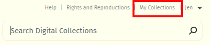
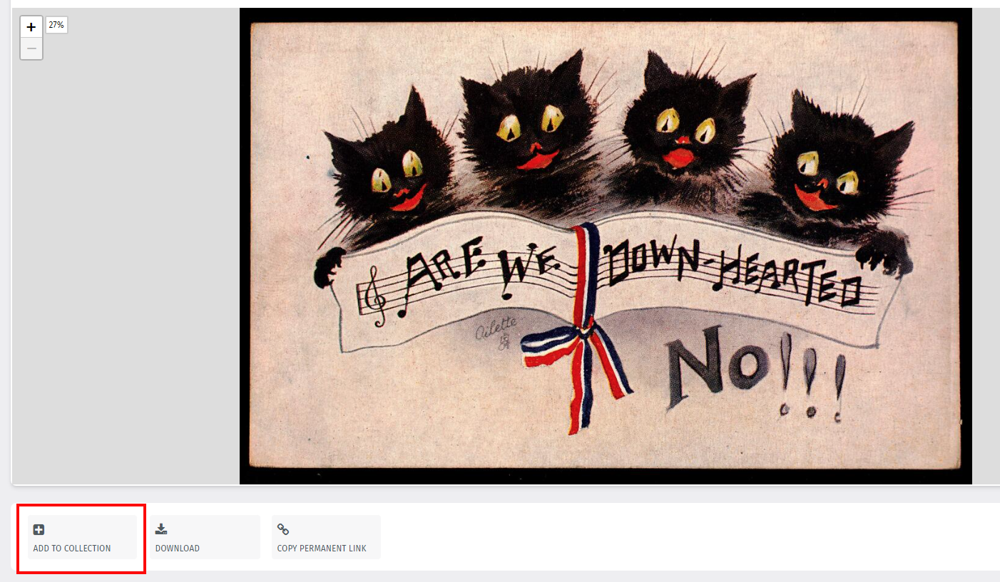
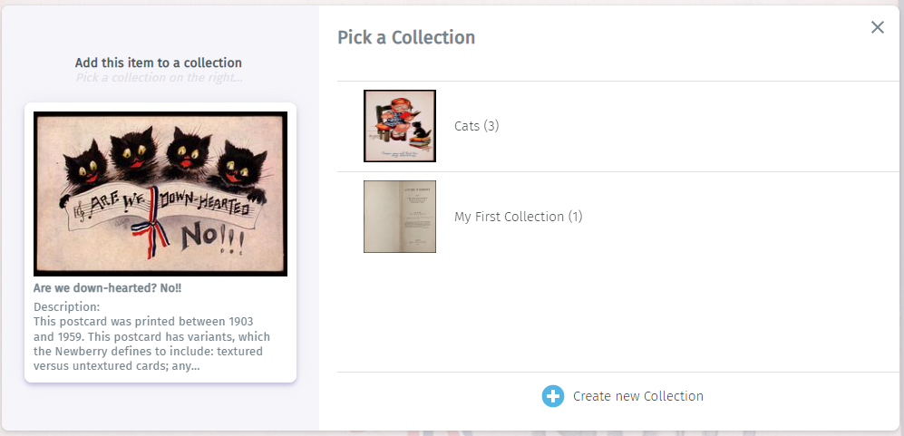
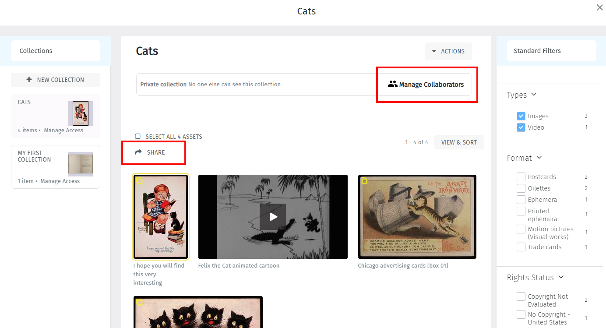
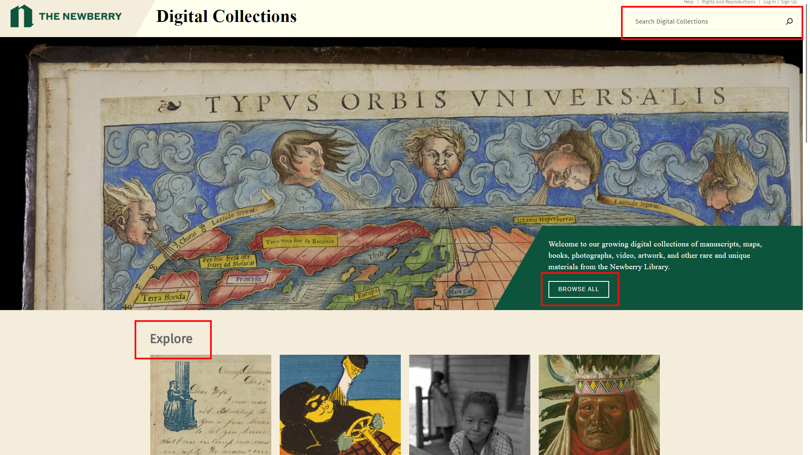
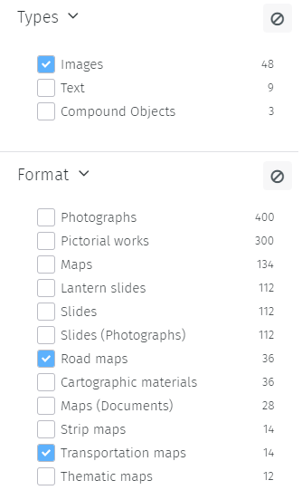
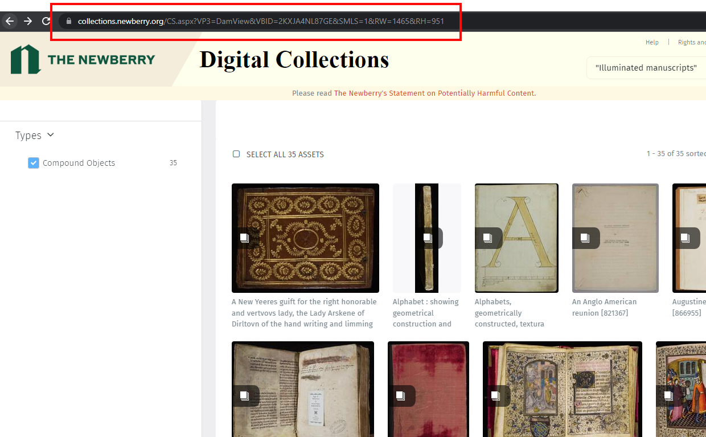
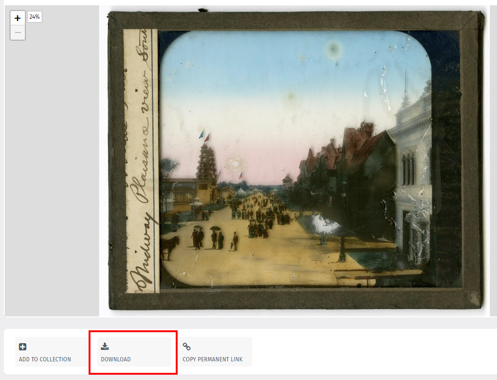
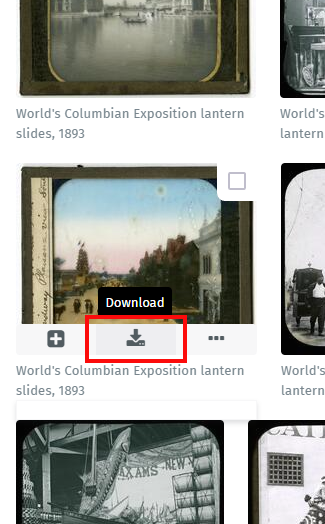
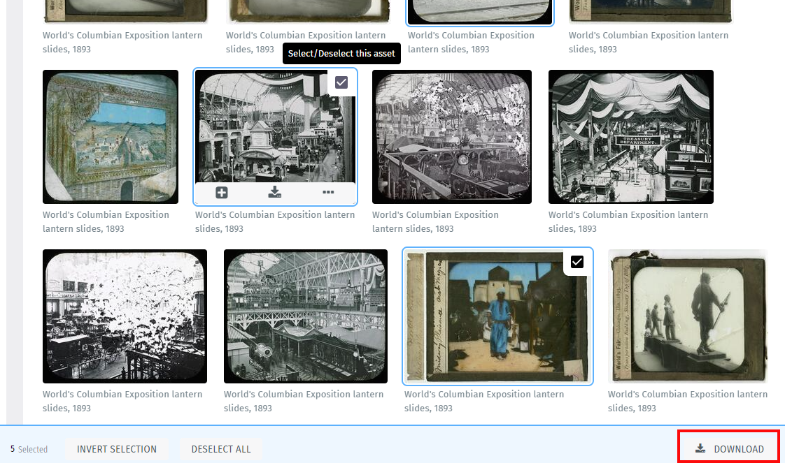

Help
About This Site
Welcome to Newberry Digital Collections (NDC)! This site features thousands of digitized manuscripts, maps, books, photographs, artworks, audio and video recordings, and other rare and unique materials from the collections of the Newberry, Chicago's independent research library since 1887. The content here represents only a fraction of the library's vast holdings; materials are continuously digitized and made freely available online as resources allow. To support these efforts, visit Give to the Newberry.
How To Create an Account
While you’re welcome to use NDC without registering, you have the option to register for a user account in order to easily bookmark and share favorite items.
To sign up, use the link at the top right of the screen, click the “Sign up” button, and fill out the registration form.
Saving Favorites
Once you’re signed in, you’ll see a new menu option at the top right: My Collections, where you can save different sets of favorites.
To create a collection, click the “Add to Collection” button under any NDC item:
This will open a pop-up window, where you’ll be prompted to add the item to a new or existing collection:
View your saved items by clicking “My Collections” at the top right screen; from there, you can invite others to view and/or edit your collection via “Manage Collaborators”, or create a URL accessible to anyone with the “Share” option.
Search Tips
The NDC home page offers three paths into the collections: use the search box at the upper right if you know what you're looking for; click the Browse All button if you want to see everything that's available; or select one of the tiles in the Explore section to browse specific formats or subject areas.
Refine with filters
Once you have a set of results, you can further refine your query using the filters side panel at the left of the screen. The side panel is a dynamic list of headings that changes depending on the attributes of your results.Check the boxes to narrow results by broad Type, specific Format, Creator, Subject, etc. Each time you choose a term, you’ll see the search results refresh to include only those that match the criteria you’ve selected. To undo a filter selection, click the box again to uncheck it, or use the “clear all” symbol 🚫 at the top of each facet.
Customize results with View & Sort menu
The View & Sort menu allows you to change the display of items on the results page. Click the button located immediately above your results will launch a pop-up menu with the following categories:
- View:
- Manage how items display.
- Sort:
- Manage the order in which item display.
- Count:
- Manage the number of items that display per page. The higher the count, the longer it may take for the page to load.
To restore the original settings, select the “reset to default” option in the lower left corner.
Modifiers and wildcards
- AND
- search for all values entered in the Search Bar.
- example: postcards AND beaches
- NOT
- exclude certain values.
- example: books NOT directories
- OR
- broaden your search to include any of the terms.
- example: greeting cards OR valentines
- ( )
- when using multiple modifiers, parentheses specify the order in which they’re executed.
- example: (maps OR atlases) NOT guidebooks
- “ “
- quotation marks allow exact searching of a phrase.
- example: “commonplace book”
- *
- the asterisk broadens search by substituting for multiple characters.
- example: snow* – retrieves results with the values snow, snowflake, snowstorm, etc.
- ?
- the question mark broadens search by substituting for a single character.
- example: organi?ation – retrieves results with the values organization and organisation.
Share
The Newberry seeks to make its collection as freely accessible and shareable as possible, in support of our mission to inspire research and learning in the humanities.
In order to share an item, you can create a persistent URL using the “Copy permanent link” button immediately below the viewer panel. Do not use the browser URL; it will just redirect to the Browse All results screen.

In order to share a set of results, use the browser URL; this will create a permanent link for re-use.
How to Download Content
There are numerous ways to download content from NDC:
- from the item view, use the Download button directly below the image viewer; 
- from the browse view, hover on the item’s thumbnail and click the Download icon; 
- to download multiple items at once, select two or more from the browse view by clicking the checkbox on the browse thumbnail; this will cause a menu to appear at the bottom of the page that includes a download option at lower right. 
Selecting any of these options will open a pop-up menu with three sections:
- Stacked assets:
- When your item consists of multiple files (e.g. a postcard with front and back images; a book with page images; etc.), the default setting is to download all files. The “Images” section will let you know the number of files in the set. (To download a subset of files in the set, see below.)
- Requestor status & use:
- Please choose the best fit from the menu options.
- Image format:
- Select from medium resolution jpegs or a highest-resolution tiff file
When you don’t want to download an entire set, e.g. only a few pages from this 302-page manuscript object
Locate a page you’re interested in, then right-click on the image and select “View page details”.
This will shift the view from displaying the page within the compound object viewer, to displaying the page as an individual file. From there, use the Download button to save only that file. Repeat this process for each file of your desired subset.
Alternatively, from the compound object viewer, you may scroll to the bottom of the screen to view page thumbnails, select your preferred subset via checkboxes, and use the Download option at the lower right corner.
Use & permissions
The Newberry makes its collections available for any lawful purpose, commercial or non-commercial, without licensing or permission fees to the library, subject to the terms and conditions outlined here. In addition to this institutional policy, specific copyright information at the item level may be found in the metadata record accompanying each asset.
Rights Status
The Rights Status field of an item’s metadata record typically contains one of three values below.
- No Copyright - United States
- The library has determined that the item is free of copyright under the laws of the United States.
- Copyright Not Evaluated
- The library has not yet undertaken an effort to determine the item’s copyright status.
- In Copyright
- The library has determined that the item is in copyright and either is the rights-holder, has obtained permission from the rights-holder(s) to make their work(s) available, or makes the item available under an exception or limitation to copyright (including Fair Use) that entitles it to make the item available. The Rights Status: In Copyright field is often paired with a copyright statement field containing instructions on seeking permission for re-use, as in the example below.
Users seeking only copyright-free content can narrow their NDC results by using the Rights Status filter and selecting the No Copyright - United States option.
For more information about these statements, see the RightsStatements.org website.
Citations
While it’s not required, we would appreciate the inclusion of the credit “Newberry Library” and a link to the item in the digital collection when repurposing NDC content. Tracking such use helps us justify and prioritize future digitization projects.
Contact Us
This site was created and maintained by the Newberry’s Digital Initiatives & Services department. Contact us at: dis@newberry.org
For questions about the collection materials featured on this site, please contact a Newberry reference librarian